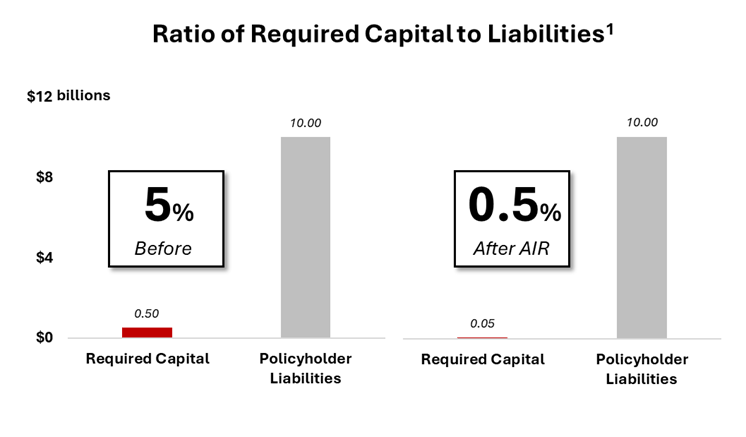
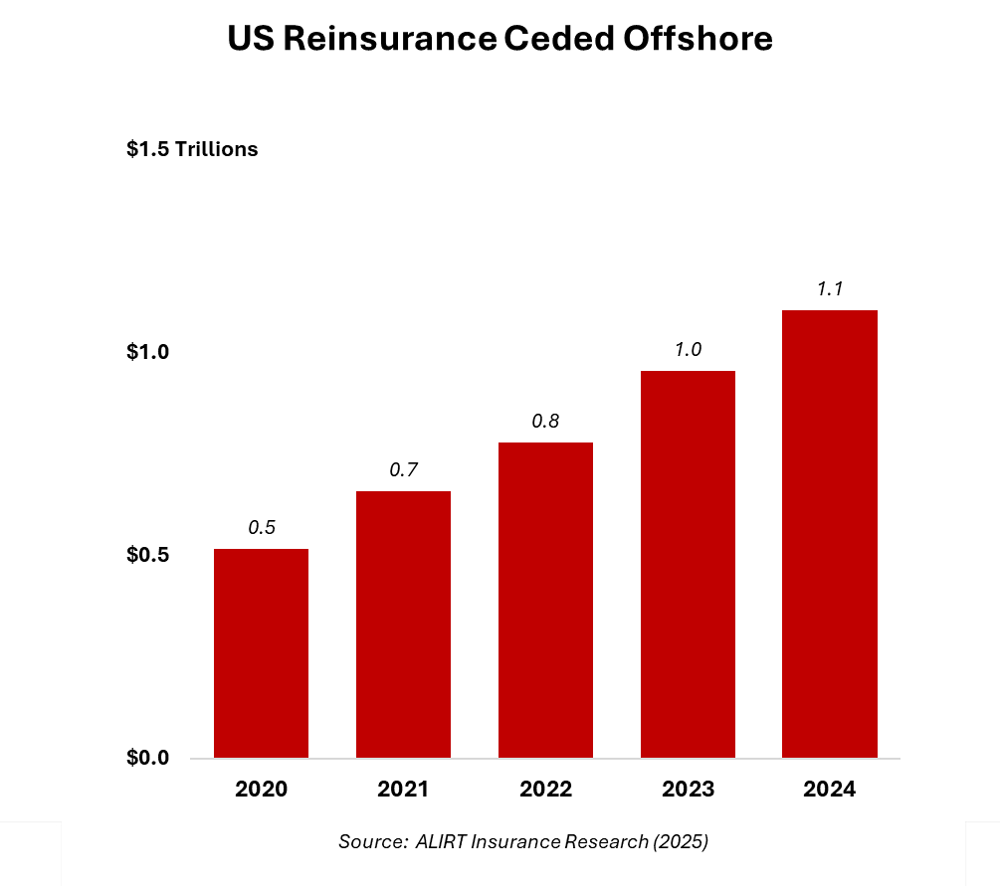

Why This Plumbing Was Built
Asset-intensive reinsurance and the quiet engine of capacity
Credit has migrated from banks to private platforms, and the centre of gravity has moved with it. Insurers, through asset-intensive reinsurance (AIR), are releasing capital and setting part of the marginal price of credit. It may look like alchemy, but the transmission is real and economy-wide. The same channel that supplies liquidity in calm periods can amplify stress when cushions shrink. Understanding AIR is table stakes for reading spreads, timing exits, and spotting pressure points across assets.
The mechanics are straightforward. A life insurer (LifeCo) may wish to reshape its balance sheet: better match assets to liabilities, smooth reported profits on older guarantees, share risk more widely, or improve capital efficiency. It then cedes a block of long-dated liabilities to a reinsurer that operates under a different accounting and solvency framework. The reinsurer may sit within the same group, in another jurisdiction, or offshore. Under that framework, differences in liability valuation, capital factors and diversification credits can reduce required capital at the reinsurer and, via reinsurance credit, at the LifeCo too. Within a group the effect appears as released capital surplus, which strengthens buffers, supports asset-liability matching and funds further investment and lending.
AIR matters because it changes the capital arithmetic. In a conservative application it can reduce risks. In a more expansionary application, a parent can hold fewer reserves against policyholder liabilities and redeploy capital into higher risk and higher yielding investments. In both cases AIR resets the amount and timing of capacity, and headroom above regulatory and rating thresholds determines how quickly new risk is added or slowed. If misjudged, the reallocation can raise credit risk for the insurer and, in the extreme, for policyholders.
Mechanism and Capital Effect
AIR lowers required capital at the ceding insurer through credit for reinsurance and, where applicable, collateral. The reinsurer holds capital under its rulebook. At the consolidated level the difference appears as released surplus even though the obligation remains inside the group. Used conservatively, surplus strengthens buffers and supports cleaner asset–liability matching. Used more expansively, it allows a parent to hold fewer reserves against policyholder liabilities and redeploy capital into higher-yielding private and structured credit. That approach increases sensitivity to asset performance and places more weight on governance of related-party flows.

In this stylised example the LifeCo’s required capital for the block falls from 5.0% to 0.5% of policyholder liabilities, which is equivalent to moving from roughly $1 of required capital per $20 of liabilities to about $1 per $200 [1]. While actual ratios will vary by product, collateral regime and jurisdiction, the implication for investment markets is clear.
There is nothing inherently controversial in the AIR structure. It is approved and monitored by US regulators on the state and national level. It is used to create capital buffers and support ratings, better match assets and liabilities, or support new investment growth. Usage is widespread across the industry (e.g. Berkshire Hathaway Reinsurance Group, Munich Re) and outcomes depend on governance, disclosure and calibration.
Scale and Dispersion

AIR is now firmly woven into the fabric of the markets and at system-scale, following a (private equity) push by LifeCos to survive in the low-rate era of the late 2010s. By the end of 2024, total life and annuity reserves ceded to reinsurers reached $2.4 trillion, an increase of $795 billion since 2020 [2]. This means balance-sheet decisions at large insurers can shape who supplies credit, at what cadence, and at what price. As capital is freed and redeployed, allocations by more aggressive groups have tilted toward higher-yielding private and structured credit. In benign periods that supports a lower cost of capital for borrowers as banks step back. In tougher periods it can work in reverse, with capital re-sequencing away from riskier assets and into safer structures. This can be particularly challenging where riskier assets are less liquid by nature, as is the case with many private market assets.

The most recent evolution of AIR has been the use of offshore frameworks to extend the effects. By end-2024, US LifeCos had ceded about $1.1 trillion of reserves offshore, with Bermuda near 38% of offshore cessions, and nearly $620 billion moved offshore during 2019-2024 [3]. The practice is often concentrated in a handful of countries whose rules differ in liability valuation, capital factors and diversification credits.
Closing Thoughts
Insurer-linked capital has grown large enough that allocation doesn’t just respond to markets, it now helps set them. In calm periods it lowers borrowing costs by financing higher-yielding private and structured credit; when headroom tightens it re-routes flows toward assets that travel better through capital rules. As this engine grows, public-market liquidity and private-market volumes will reflect not only fundamentals, but the cadence of balance-sheet decisions made inside large insurance groups.
- Illustrative US onshore AIR scenario. Cedent is a US LifeCo ceding a $10bn fixed-annuity block to an affiliated Vermont captive via ModCo/Funds-Withheld. “Before” assumes US statutory reserves ≈ $10.5bn (≈105% of economic liabilities) and required capital equal to 5% of economic liabilities ($0.5bn). “After AIR” reflects credit for reinsurance at the cedent with assets held funds-withheld, so cedent RBC for the block drops to a counterparty default charge ~0.5% ($0.05bn). Ratios shown are cedent required capital divided by economic liabilities. Reinsurer capital is held under its own rulebook; taxes, fees, rating add-ons, and product nuances are ignored. Stylized and state/jurisdiction outcomes vary. ↩
- National Bureau of Economic Research, “Shadow Insurance”, Oct 2016; ALIRT Insurance Research, “US Life Insurers' Foreign Reinsurance Exposure”, Jul 2025 ↩
- ALIRT Insurance Research, “US Life Insurers' Foreign Reinsurance Exposure”, Jul 2025 ↩